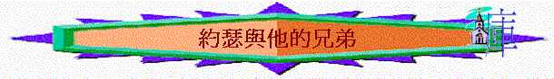

引言：分享你原身的家庭，有沒有兄弟姊妹？相處如何？今天我們看一看約瑟與他的弟兄相處又如何。。。。。。
1. 試從創37:1-4簡介約瑟這個人/家庭背境
2.你認為他們兄弟相處融洽嗎？何以見得？
3.37:5-11約瑟發了什麼夢？ 你若是他的兄弟，你聽了後有什麼反應？為什麼？他的兄弟又有什麼反應？ 你認為約瑟被兄弟恨惡及嫉妒是合理嗎？
4.有沒有試過被人恨惡及的經歷？當時有什麼感受？如何經過？
5.你在未信主前，又有否恨惡及嫉妒他人呢？信主後，又有沒有改善？
6.在創37:12-20中發生了什麼事情?
他們想怎樣待約瑟？為何是親生的兄弟，有如此想法？ 又給我們聯想什麼事情（例如恨的嚴重及擴展性……）
7.在創37: 21-28流便和猶大與其他兄弟有什麼不同的地方？最後約瑟怎樣？但流便和猶大是否又很完全的愛約瑟？ 為什麼？
8.你今天在團契生活中，你認為自己完全的愛肢體嗎？為什麼？
9.在創41:37-43，46-57中，約瑟有甚麼成就及蒙福的地方？
被埃及王抬升為宰相，有權勢，有地位，有工作成就(儲糧)，有妻，有兒。
10.在創50:15-17，約瑟的兄弟後來來到埃及，但他們怕甚麼？
為甚麼怕？
11.你若是約瑟，你會否原諒他們？
極其量你在日後的日子會怎對他們？
12.在創50:18-21，約瑟有甚麼美好表現值得我們效法？
他是否單單原諒他們呢？
不單饒恕，更安慰他們，善待他們(必養活他們的家庭)，以善對惡，以恩報怨。
13.有沒有饒恕人的經歷？試分享
總結：從約瑟與他的兄弟中，我們學到甚麼功課？
祈禱